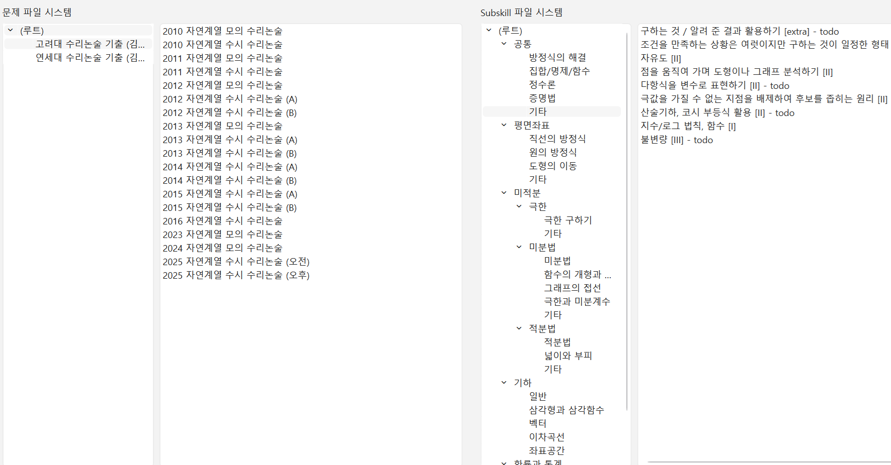
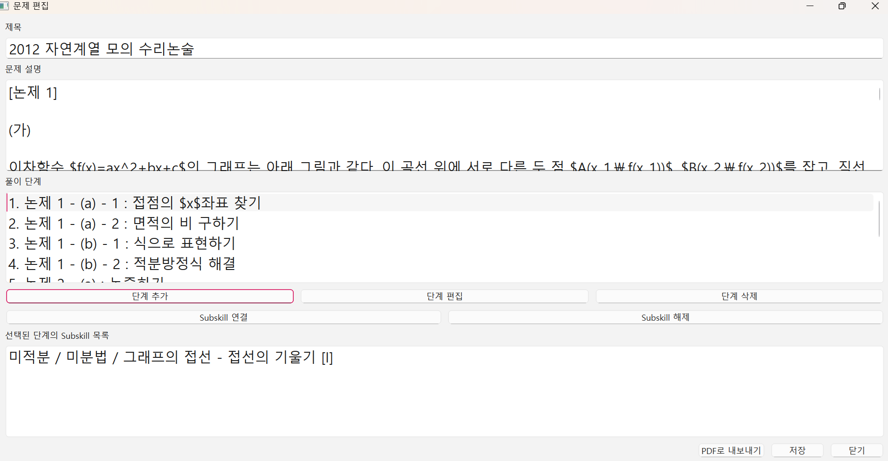

문제-테크닉 연결 데이터베이스 개발 및 적재 활동 소개 [돌아가기]
1) 개요
· 강사가 되면 앞으로 문제를 디지털화하여 저장해 둘 필요가 있겠다고 느꼈습니다. 마침 개발자를 준비하면서 프롬프팅을 활용한 개발도 시도하고 싶었으니, 문제 데이터베이스와 GUI(화면의 아이콘을 통해 파일 시스템에 접근하는, Windows와 같은 인터페이스)를 만들어 사용하기로 하였습니다.
· 개발은 10월 초에 수일간 ChatGPT(Plus)를 활용하여 진행하였으며, 구색을 갖춘 첫 버전을 만든 뒤 운용하고 있습니다. 제가 혼자 쓸 프로그램이라 디자인 면에서 열심히 꾸밀 계획은 없지만, 앞으로 다양한 기능을 추가하며 업데이트할 필요성을 느끼고 있습니다.
2) Features
아래는 메인화면으로, 11월부터 고려대/연세대 수리논술 기출문제 50여 회 분량을 적재하고 난 모습입니다.

Fig.1 Mainscreen
보다시피 문제 파일 시스템 외에도 "Subskill"(GPT가 설정한 이름...) 파일 시스템이 따로 있습니다. 특정 범위에서 출제된 문제 집합을 적재하면서 풀이 단계를 요약 기재하게 되는데, 이때 풀이의 각 단계마다 사용된 테크닉들을 연결해 줄 수 있습니다. 테크닉 집합은 테크닉 파일 시스템에 따로 묶이니, 적재를 마치고 이것을 쭉 보면 학생들에게 설명할 요소들을 일괄 정리해볼 수 있게 되는 것입니다. 심지어 양방 연결이 형성되기 때문에, 테크닉 설명을 준비할 시 이 테크닉을 다루는 문제들을 역으로 볼 수 있게 되는 효과가 있습니다!
유튜브 개인 채널의 2, 3번째 "수리논술 주제특강" 영상들에서 쓰일 주제들도 수리논술 기출문제 적재 이후 Subskill 파일 시스템에서 골라 낸 것들이니, 프로그램의 기대 효과가 톡톡히 드러나고 있습니다.

Fig.2 Problem Editor
문제 편집 화면은 위와 같이 생겼습니다. Subskill 편집 화면도 이와 유사한 구조로 되어 있으나 풀이 단계 대신 prerequisites(선수 개념)를 설정할 수 있도록 두었습니다.
문제 설명은 LaTeX 문법으로 적습니다. PDF Export를 하면 자동으로 미리 설정된 템플릿으로 PDF가 뽑혀 나오도록 하였습니다. 풀이는 단계별로 구분하여 적으며, 단계를 더블클릭하면 이를 다시 편집할 수 있습니다. 각 단계별로 Subskill(들)을 선택하여 연결할 수 있도록 하였습니다.
이렇게 완성한 문제 PDF 예시입니다:
2012 자연계열 모의 수리논술.pdf3) To-Dos
· 현재는 단일 문제만 PDF로 뽑을 수 있습니다. 문제 셋(set)을 뽑아낼 수 있다면 교재 제작이 자동화되는 효과를 얻을 것입니다. 추출한 PDF를 실제 교재로 사용하려면, 디자인에 조금 더 신경을 써야 할 것입니다. 이는 LaTeX 템플릿을 수정해야 하는 문제입니다. 전곡고등학교 집중멘토링 때 만든 양식을 활용할 수도 있겠습니다.
· 해설지 교재 추출을 위해서는 난이도 표시 기능, note 상자 삽입 기능 등을 만들면 좋겠습니다.
· Subskill(테크닉) 집합을 강의 범위별로 분류할 필요가 있겠습니다. 이를테면 고등 내신 강의에 사용한 복소수 단원 테크닉 집합은 수능 강의 테크닉 집합과 분리하는 것이 좋을 것입니다. 효과적인 운용을 위해 파일 시스템에 디렉토리(폴더) 복사 기능을 추가할 필요가 있겠습니다.